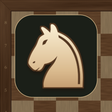

KnightMind
Offline chess for iPhone and iPad
App Support
For help with KnightMind, bug reports, or feature requests, email homerquan@gmail.com. For a bug report, include your device model, iOS or iPadOS version, and the steps that led to the issue.
Getting started
Tap a white piece to see its legal moves, then tap a destination. To hear why a move matters, open Settings and choose Teach. Tap the Rook caption to see notes and request a hint.
Spoken commentary is available offline and can be turned off in Settings. KnightMind requires iOS 18 or iPadOS 18 or later. Apple Intelligence coaching requires a compatible device with the on-device model available. Built-in coaching works on other supported devices.
Source code
KnightMind is available under the GNU General Public License v3. The source snapshot includes the app, the Stockfish integration, and the files needed to build this release.